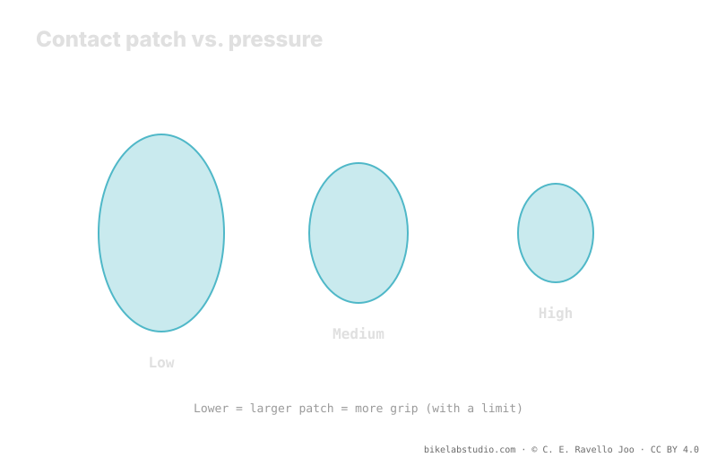

Lowering pressure grows the contact patch: more rubber touches the ground and the casing conforms to the terrain, so you gain grip in corners, braking and climbing. But there is a limit: past a point the tire twists (squirm), goes vague, and can unseat or lose air suddenly (burping). Mud asks for more patch; dry rock, more support. Pressure is not a number, and your starting range comes from the calculator.
"Drop pressure for more grip" is half the advice. The other half —the part almost nobody tells you— is where the limit is, because past that point you do not gain grip: you lose it, and you risk the rim on top.
Before dropping blindly: the PSI Pressure Calculator gives you a safe range by weight, width, rim and discipline, to fine-tune from. ▶ Open the PSI calculator
Grip comes from contact between rubber and ground. When you lower pressure, the tire flattens a little more against the terrain and its contact patch grows: more rubber touches, and the casing —running softer— conforms to the irregularities instead of bridging them. In corners that means more surface biting; in braking, more rubber transmitting; in climbing, knobs that penetrate better. So, in general, lowering pressure raises grip. Up to a point.

The patch does not grow for free. Every point you drop for more grip also brings the sidewall closer to its structural limit. Grip and stability pull in opposite directions.
If you keep dropping, squirm appears: under a hard load the sidewall gives sideways, the patch twists and the wheel feels vague and imprecise. You put the bike into a corner and it responds with a delay, as if on soft rubber. That is the tire telling you it lacks support. Lower still comes burping: a hard hit or a lateral load briefly separates the bead from the rim seat and a gulp of air escapes —on tubeless—, or you unseat outright. At that point it is no longer about grip: it is about finishing the descent.
Washout is the sudden loss of front-wheel grip in a corner: the tire stops biting and the wheel slides out. It can come from too little grip —high pressure, small patch on loose ground— or from too little support —low pressure, squirm that collapses the load just when you push hardest. So "grip" is not just "more patch": it is the right patch, with enough support that it does not give at the critical instant. The front lives on this, which is why it usually runs a little lower than the rear but not so low that it twists.
Where the useful point falls depends on terrain. In mud and wet root, grip comes from knobs penetrating and the patch conforming to soft, uneven ground: there a bigger patch —lower pressure— genuinely helps. On dry rock and hard berms, available grip is already high and what you need is support and precision: slightly higher pressure prevents squirm and protects the bead against sharp edges. The same tire, on the same wheels, wants different pressures depending on whether you ride mud or rock.
Yes, up to a limit. It grows the patch and the casing conforms; past the point, squirm and burping appear and you lose grip and safety.
Squirm: the sidewall gives and steering goes vague. Burping: at very low pressure, a hit separates bead from rim and air escapes (tubeless).
Mud asks for patch and knob penetration; dry rock asks for support and precision. Terrain moves the useful point.
Not fixed: it depends on weight, width, rim, casing and inserts, and terrain. Start from a calculated range and drop until you feel the limit.
Patch-with-support is dialed on the trail, but it starts from a range: the PSI Pressure Calculator gives it per wheel by width, rim and discipline. ▶ Open the PSI calculator
© 2026 BikeLab Studio. Content under CC BY 4.0: you may copy, translate and publish it, even for commercial purposes. Citation is mandatory. Without attribution, the license terminates automatically (CC BY 4.0, §6.a) and the use becomes copyright infringement: we request the removal of the content and its deindexing. · Design and ownership: Carlos Ravello Joo